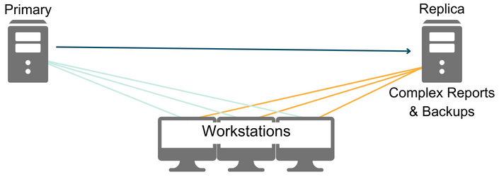

Multiple Locations
See Advanced Topics.
Open Dental can be successfully used when multiple locations are involved. Before deciding a strategy, the practice must determine its needs.
- Will there be separate databases for each location or a single central database shared by all locations?
- If using a single database, how will locations share data?
- How will workstations in each location connect to the server and each other?
- Will the Clinics feature be used to organize data by location?
Reminder: Open Dental Support cannot assist with network setup. It is recommended to have a capable IT set up and maintain any network settings.
Resources:
Virtual Private Network (VPN): In many of the discussions and diagrams below, it is assumed that locations are connected by a VPN. In our diagrams, various network routers and switches are generally omitted for simplicity. Also not included in the diagrams are the shared A to Z Folder (i.e., OpenDentImages). A network administrator is usually involved in setting it up.
Option 1: Separate Databases

Each location has their own server hosting their own Open Dental database.
This option is best when:
- Each location is entirely separate
- Patients do not see providers at other locations
Option 2: Separate Databases using Remote Access

Each location has their own server, hosting their own Open Dental database. A Remote Access program would allow users to view data at other locations.
This option is best when:
- Locations are mostly separate
- Patients do not routinely see providers at other locations
- Users occasionally need to access data at the other location
Option 3: Separate Databases using CEMT

Each location has their own server, hosting their own Open Dental database.
Using the Central Enterprise Management Tool ( CEMT ), users can quickly access the databases at other locations. All locations must be on the same VPN.
This option is best when:
- There are more than two locations
- Patients mostly see the same provider, but may vary as needed
- Users routinely need access to the data at another location
- A headquarters location needs access for Production & Income reporting, billing, claims, scheduling, or other routine processes.
Option 4: Single Database using a VPN

One location hosts a shared database for all offices.
This option is best when:
- The organization is using Clinics
- Patients routinely see providers at other locations
- Users routinely need access to data for each location
- Each location has high speed internet and there are fewer than *5 locations
- *this number may vary, however fewer than 5 typically recommended.
Option 5: Single Database using Middle Tier

Middle Tier isolates the database, improving speed and security by preventing client workstations from directly accessing the database. The server program sits between the database and the client machines. Workstations are ordinary thick clients running the full Windows version of Open Dental.
This option is best when:
- The organization is using clinics
- There is a large local network that might be shared with non-users of Open Dental (like a college campus or hospital).
- Each location has consistent and high-speed internet
Option 6: Single Database with Terminal Server

One location hosts a single database for all locations. Terminal Servers allow multiple login sessions at the same time for RDS sessions or RemoteApp, but with limitations and restrictions on what the user can do or see within the connection.
This option is best when:
- The organization is utilizing clinics
- Less overhead and less configuration than a VPN
- Only need to set up one server with secure access to a single IP.
- If the organization expands, only need to set up a load sharing server
Option 7: Single Database with Load Balancing Server in Terminal Server

One location hosts a single database for all locations. Rather than directly connecting to the server at the main location, locations access a load balancing server.
This option is best when:
- The organization is utilizing clinics
- The organization has a lot of users. Helps relieve slowness due to bandwidth restrictions
Option 8: Single Database with Direct Connection, using Thick & Thin Clients

One location hosts the database for all location.
This option is best when:
- The organization is utilizing clinics
- The organization has a lot of users. Helps relieve slowness due to bandwidth restrictions
Option 9: Single Database with Open Dental Cloud

Utilizing the Open Dental Cloud service.
This option is best when:
- The organization is using clinics
- Patients routinely see providers at other locations
- Users routinely need access to data at other locations
- The locations have a consistent and high-speed internet connection
- The office wants to eliminate server upkeep
Option 10: Single Database using 1-Way Replication
Utilizing 1-Way Replication.
This option is best when:
- Organization has many workstations
- Helps resolve slowness when running reports or backups
Option 11: Single Database using Daisy Chain Replication

The Replication forms a ring. All the databases together are referred to as a single virtual database.
This option is best when:
- The organization has 5 or fewer physical servers.
- The organization has multiple locations and is utilizing clinics
- The organization has mobile units that service different areas (nursing homes, students, etc)
- A skilled database administrator is available to monitor replication
- A stable internet connection is not always available. Each location can continue to function normally even if the internet connection is lost.
Option 12: Galera Cluster

A Galera Cluster is not a stand-alone solution, but instead is used in conjunction with other options (e.g. Option 8).
- Galera Clustering is only available on Linux, and only supports InnoDB.
- If considering a Galera Cluster for locations, please contact Open Dental support and speak with the Implementations Team to discuss what version of MariaDB or MySQL will work best.
This option is best when:
- The organization has large databases.
- The organization has a large number of workstations/clients.
- The organization has a skilled IT team to manage the cluster.
Advantages of a Galera Cluster include:
- Redundancy
- Load Balancing
- Scalability
Removable Storage Devices
If there are two locations, but data is only accessed from one location at a time, practices could use a removable storage device to take data between locations. See Encryption of Data at Rest and in Transit for recommendations for protecting data in transit. Examples:
- Notebook computer: Use it as the server and take it between locations. Other workstations can use the same data when the notebook is connected to the local network.
- External Hard Drive: Set up servers at each location. On each server, MySQL would only function if the external hard drive is plugged in.
- The database would be on the E: drive or something similar.
- A user would need to know how to install MySQL to run the database from the alternate drive.
- A user would need to know how to move the database to the new location.
- A user would have to shut the server down each day before removing the hard drive.
- When restarting the server, a user would need to know how to start the MySQL service if it isn't already running.
This is not a good strategy as it interferes with a proper Backup/Restore strategy (make a copy of the data and run it at home) and staff can't work until a user brings the hard drive back to the office.
MySQL Clustering
Open Dental will not work in a MySQL Cluster because many of the tables have rows that are too long. In a MySQL clustering setup, one database can be spread across multiple physical servers. This is a way to increase the speed and reliability of a database at one location. It is not a way to have one database at multiple locations.
As noted above, a Galera Cluster environment can be used in conjunction with other multiple location options.
A Windows cluster is different. We have seen Open Dental work in a Windows cluster setup, although we cannot currently provide technical support to assist with such a configuration.
Multi-tenant Hosting
If you wish to host multiple customers on the same database server, see Host Multiple Databases from One Web Server for isolation information.